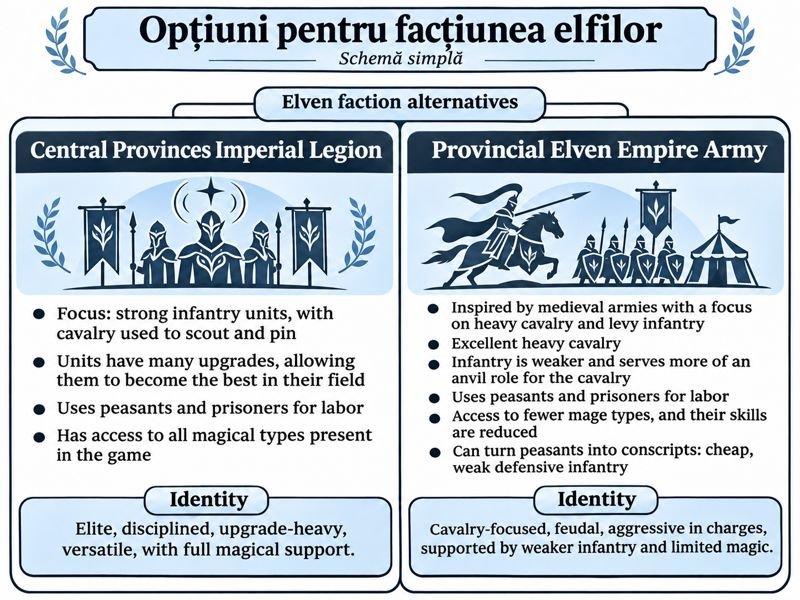

Premise
Two factions share the same map and the same basic jobs: gather resources, raise buildings, and field an army. They do not share a way of making power.
Ages
Both sides advance through ages. An age unlocks units, technologies, and new uses for units that already exist.
Economy
Four resources. A simple worker gathers all of them.
Population
There is no fixed population cap. Houses are what let you keep more workers and soldiers. Each house adds 10 population.
The first base
Shared by both factions
| Piece | What it does |
|---|---|
| Town Center Centru administrativ | A main building. Trains workers. |
| Worker Lucrător | Gathers resources. Builds a Town Center, a Barracks, or a House. |
| Barracks Cazarmă | Trains infantry. |
| House Casă | Adds 10 population. |
| Infantry Infanterist | The basic soldier. Fights enemy units. |
Production
Training a unit takes 20 seconds. The first match loop is short:
- 1. The Town Center trains a worker.
- 2. The worker builds a house, and the population room grows by 10.
- 3. The worker builds a barracks.
- 4. The barracks trains infantry.
- 5. Infantry attack enemy units.
- 6. A worker can also raise another Town Center, which trains more workers.
Elves
Open choice
Elves are the quality faction: stronger starting units, and labor drawn from peasants and prisoners. Which army they are is not chosen yet. These are the two options.

Central Provinces Imperial Legion
- Strong infantry. Cavalry scouts and pins.
- Many upgrades. Units can become the best of their kind.
- Peasants and prisoners do the labor.
- Every kind of magic in the game is available.
Identity. Elite, disciplined, upgrade-heavy, versatile, with full magical support.
Provincial Elven Empire Army
- A medieval army: heavy cavalry in front, levy infantry behind.
- The cavalry is excellent. The infantry is the anvil, and it is weaker.
- Peasants and prisoners do the labor.
- Fewer mage types, and the mages they have are less skilled.
- Peasants can be turned into conscripts: cheap, weak, defensive infantry.
Identity. Cavalry-focused and feudal. Aggressive in the charge, carried by weaker infantry and limited magic.
Humans
Open choice
Humans never use magic. They are more numerous, and their technology runs further. Whichever culture is chosen, their society is more centralized and more community-minded than the historical model it comes from.

Industrial Rome
- Fortifications and fast construction are the focus.
- Infantry can build fortifications and buildings.
- Prisoners are used as forced labor.
- Prisoners can be ransomed for gold.
Identity. Defensive and organized. Expansion comes from construction and control.
Mongol inspired
- Buildings can pack up and move. The faction stays mobile.
- Raiders matter. Enemies can be plundered for resources.
- Captured enemies can be forced to fight for you, with reduced stats.
- That capture does not work on mages or on units of magical origin.
Identity. Mobile, aggressive, and flexible. The plan is the raid.
Veterancy
Working rule
A unit is not replaced by an identical copy of itself. The soldier who has already fought is a different asset from the recruit who just left the barracks.
The rank names and the size of the combat bonus are not fixed yet. The rule is: experience belongs to the body that earned it.
Recovery from the field
Working rule
A defeated soldier does not vanish. They fall where they were fighting, and your own side can bring them home. This is your unit coming back. It is separate from taking enemy prisoners, which only some faction options can do.
- 1. The unit drops on the field instead of being deleted.
- 2. A worker carries them back to a Town Center or a Barracks.
- 3. They return to the army with the veterancy they already had.
- 4. If nobody reaches them, or an enemy finishes them, they are gone and the experience goes with them.
How long a body stays recoverable is not fixed yet. In the first version, workers do the carrying.
What the prototype has to prove
The first playable slice is the shared base, not the faction split and not the later ages.
- Train workers.
- Build houses, town centers, and barracks.
- Raise the population by building houses.
- Train infantry.
- Have those infantry fight enemy units.
Economy, the military roster, and the age track grow from that loop.